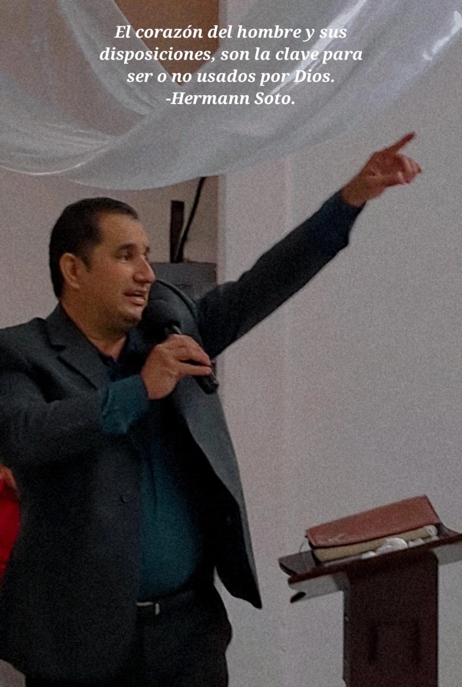
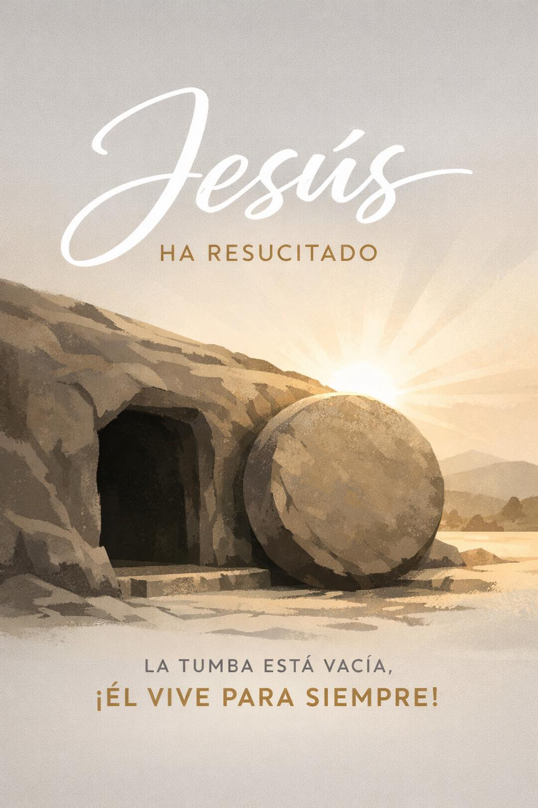
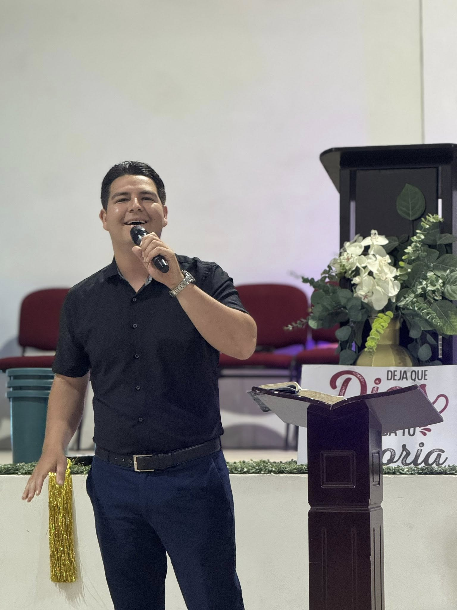
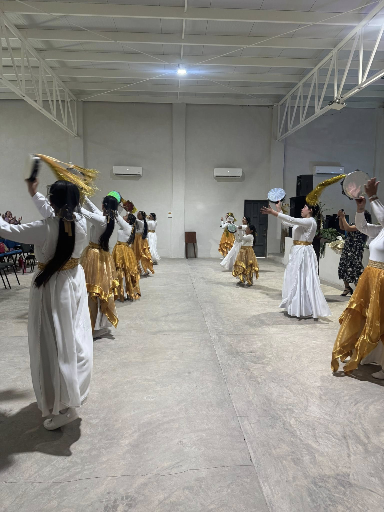
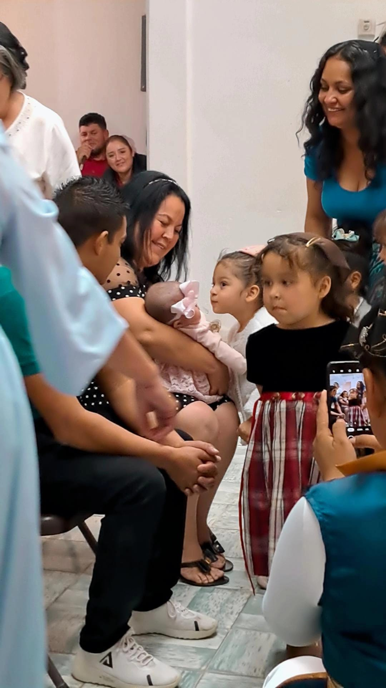
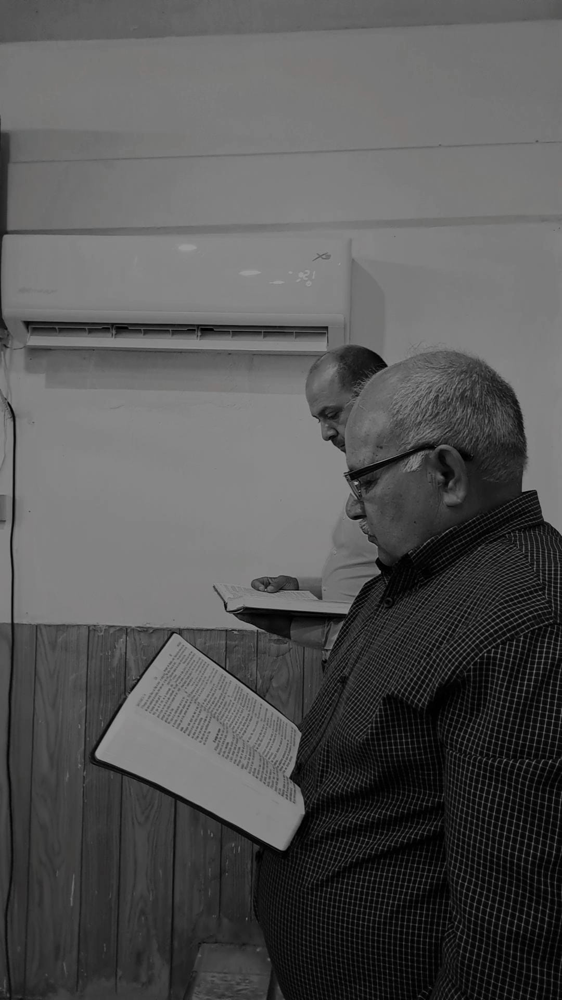
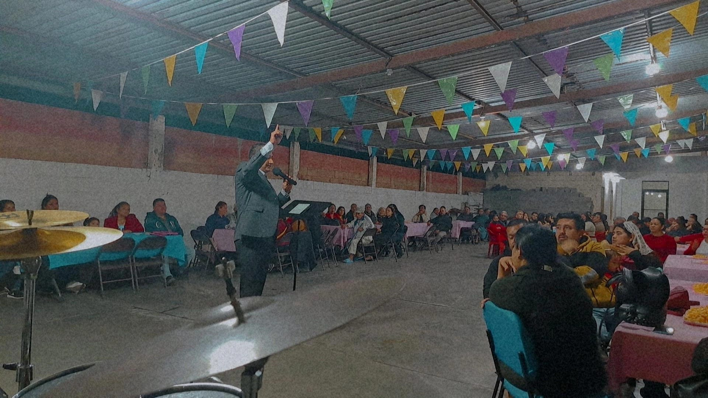
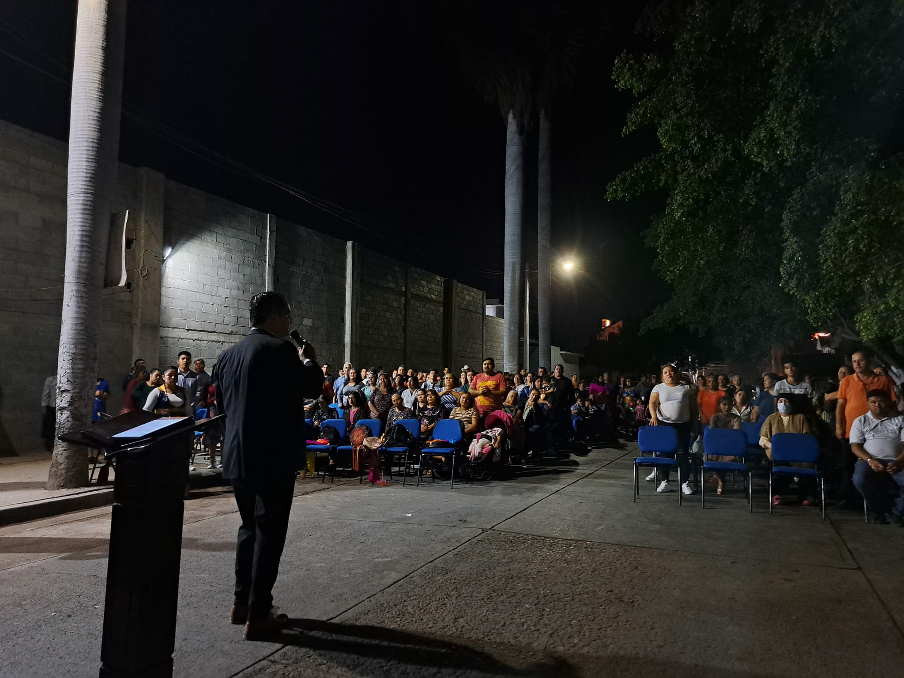
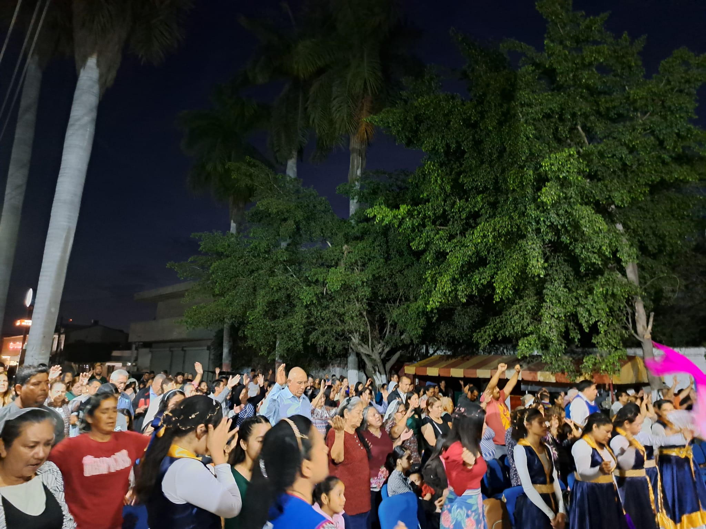

Declaración de Fe
Creemos en un solo Dios verdadero manifestado en Jesucristo, en el bautismo en el nombre de Jesucristo y en el Espíritu Santo como regalo de salvación.


Iglesia Apostólica de la Fe en Cristo Jesús
Una congregación fundamentada en la Palabra de Dios, comprometida con el evangelio apostólico y con el crecimiento espiritual de cada familia en El Dorado, Sinaloa.
"Porque yo sé los pensamientos que tengo acerca de vosotros… pensamientos de paz." — Jer. 29:11
Creemos en un solo Dios verdadero manifestado en Jesucristo, en el bautismo en el nombre de Jesucristo y en el Espíritu Santo como regalo de salvación.
Fundada con visión y fe, nuestra congregación ha crecido bajo el liderazgo de pastores pioneros que sembraron la Palabra en El Dorado, Sinaloa.

Con amor pastoral y visión de crecimiento espiritual, te invitamos a ser parte de esta familia de fe.
Te esperamos con los brazos abiertos en cada uno de nuestros servicios
IAFCJ El Dorado — Frente al IMSS, El Dorado, Sinaloa
Cursos doctrinales y discipulado para toda la familia. Formando creyentes firmes en la fe apostólica.
Levantando adoración al Rey de reyes en cada servicio.
Ingresa tu ubicación y te mostramos la célula más cercana a ti
Un encuentro poderoso con la presencia de Dios. Dos días de adoración, palabra profética y manifestación del Espíritu Santo.
Faltan

.jpg)




Bautismos en Agua
Campañas Evangelísticas
Aniversario de la Iglesia
Momentos que reflejan la vida y el amor de nuestra congregación

.jpg)



Síguenos en Facebook para nuestras transmisiones en vivo cada servicio. Ver perfil del pastor ↗
Tu generosidad impulsa la obra de Dios en El Dorado y más allá.
📍 IAFCJ El Dorado — Frente al IMSS, El Dorado, Sinaloa
📞 Teléfono: (por agregar)
📧 Correo: (por agregar)
IG: @jóvenesd.eldorado_30